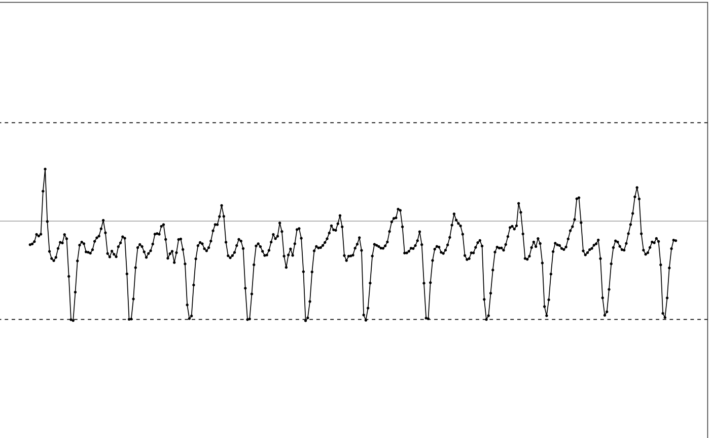
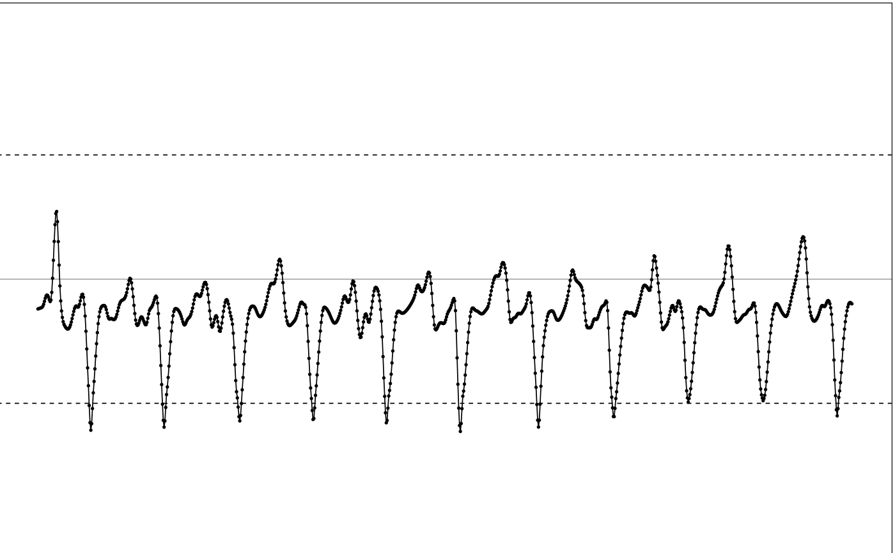

extrapolate applies the extrapolation algorithm to a multi-channel
accelerometer data, trying to reconstruct the true movement from the
maxed-out samples.
extrapolate(df, ...) extrapolate_single_col( t, value, range, noise_level = 0.03, k = 0.05, spar = 0.6 )
| df | dataframe. Input multi-channel accelerometer data. Used in
|
|---|---|
| ... | see following parameter list. |
| t | POSIXct or numeric vector. Input index or timestamp sequence Used in
|
| value | numeric vector. Value vector used in
|
| range | numeric vector. The dynamic ranges of the input signal. Should
be a 2-element numeric vector. |
| noise_level | number. The tolerable noise level in \(g\) unit, should be between 0 and 1. Default is 0.03, which applies to most devices. |
| k | number. Duration of neighborhood to be used in local spline regression for each side, in seconds. Default is 0.05, as optimized by MIMS-unit algorithm. |
| spar | number. Between 0 and 1, to control how smooth we want to fit local spline regression, 0 is linear and 1 matches all local points. Default is 0.6, as optimized by MIMS-unit algorithm. |
extraplate returns a dataframe with extrapolated multi-channel
signal. extrapolate_single_col returns a dataframe with extrapolated
single-channel signal, the timestamp col is in numeric values instead of
POSIXct format.
This function first linearly interpolates the input signal to 100Hz, and then applies the extrapolation algorithm (see the manuscript) to recover the maxed-out samples. Maxed-out samples are samples that are cut off because the intensity of the underlying movement exceeds the dynamic range of the device.
extrapolate processes a dataframe of a multi-channel accelerometer
signal. extrapolate_single_col processes a single-channel signal with
its timestamps and values specified in the first and second arguments.
This function is the first step during MIMS-unit algorithm, applied before filtering.
Other extrapolation related functions:
extrapolate_rate()
# Use the maxed-out data for the conceptual diagram df = conceptual_diagram_data[ conceptual_diagram_data['GRANGE'] == 4, c("HEADER_TIME_STAMP", "X")] # Plot input illustrate_signal(df, range=c(-4, 4))# Use the default parameter settings as in MIMunit algorithms # The dynamic range of the input data is -4g to 4g. output = extrapolate(df, range=c(-4, 4)) # Plot output illustrate_signal(output, range=c(-4, 4))